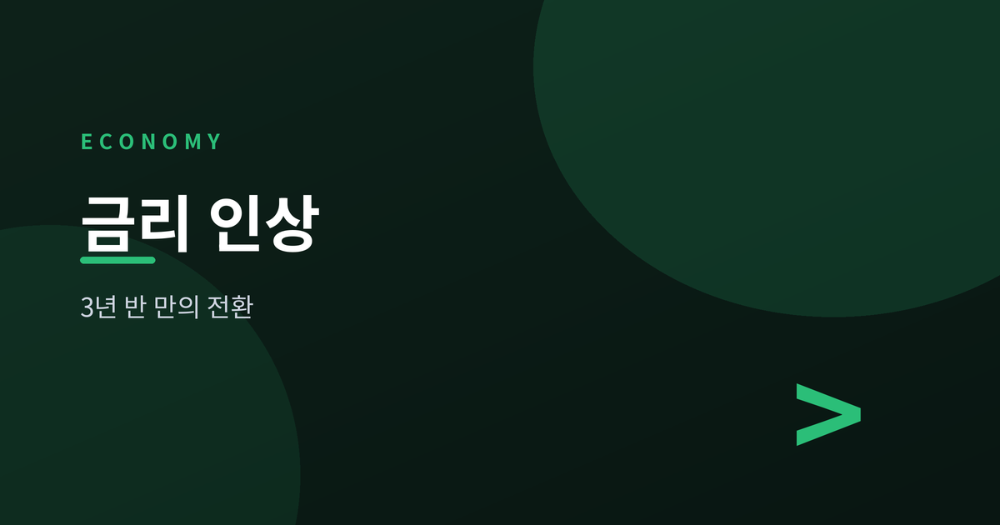
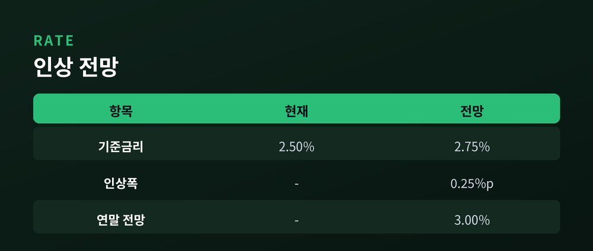
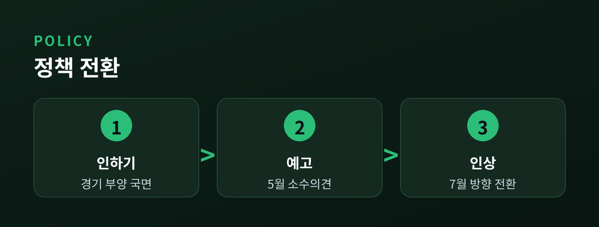
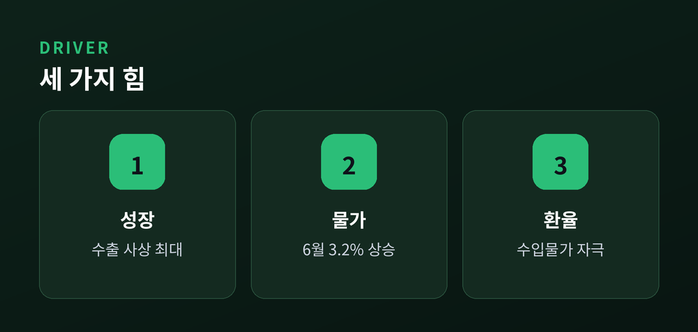
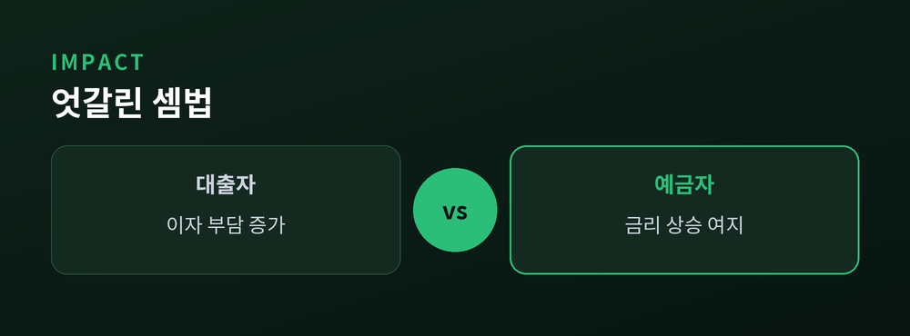

7·16 금통위가 던지는 신호

한국은행이 곧 금리를 올릴 것으로 보입니다. 7월 16일 금융통화위원회를 앞두고 시장은 인상을 거의 기정사실로 받아들이고 있습니다. 이번 글에서는 무슨 일이 벌어지고 있고, 왜 중요하며, 우리 살림살이에는 어떤 영향이 있을지 정리해 보겠습니다.
내리던 금리가 방향을 바꾸는 국면입니다. 그 배경에는 수출 호황과 물가·환율이라는 상반된 힘이 함께 놓여 있습니다.
한국은행은 7월 16일 통화정책방향 결정회의를 엽니다. 시장은 기준금리가 현재 연 2.50%에서 2.75%로 0.25%포인트 오를 것으로 봅니다.
전문가 눈높이도 한 방향입니다. 한 설문에서는 전문가 12명 중 11명이 인상을 점쳤고, 채권시장 전문가를 대상으로 한 조사에서는 10명 중 9명이 만장일치 인상을 내다봤습니다. 여러 기관의 조사가 나란히 같은 결론에 도달한 셈입니다.
현실이 되면 2023년 1월 이후 약 3년 6개월 만의 금리 인상입니다.

방향 전환이기 때문입니다. 그동안 한국은행은 경기를 살리기 위해 금리를 낮추거나 묶어 왔습니다. 인상은 그 흐름을 되돌리는 신호입니다.
지난 5월 회의에서 이미 조짐이 있었습니다. 금통위원 일부가 인상 소수의견을 냈고, 총재도 적절한 시기의 인상 필요성을 언급했습니다. 시장은 이를 사실상의 예고로 읽었습니다.
한 번으로 끝나지 않을 수 있다는 점도 중요합니다. 다수 전문가는 10월 추가 인상과 함께 연말 기준금리가 연 3.00%에 이를 가능성을 함께 계산하고 있습니다.

이유는 세 가지가 겹칩니다.
첫째, 성장세입니다. 한국은행은 올해 성장률 전망을 2.0%에서 2.6%로 올렸습니다. 6월 수출은 사상 처음 월 1,022억 달러로 1,000억 달러를 넘었고, 반도체 수출만 448억 달러에 달했습니다.
둘째, 물가입니다. 6월 소비자물가 상승률은 3.2%로 목표선인 2%를 웃돌았습니다.
셋째, 환율입니다. 높은 원/달러 환율이 수입 물가를 자극하며 부담을 키우고 있습니다.

금리가 오르면 대출 이자 부담이 커집니다. 특히 변동금리 주택담보대출을 쓰는 가계라면 상환액이 늘 수 있습니다.
정책 당국도 이 지점을 주시합니다. 최근 일부 지역 집값 변동성이 커지자 금융당국은 가계부채 관리와 대출 규제 강화 방침을 밝혔습니다. 금리와 규제가 함께 움직이는 국면입니다.
반대로 예금 금리는 오를 여지가 생깁니다. 빚이 있는 쪽과 저축하는 쪽의 셈법이 달라지는 시기입니다.

관건은 속도입니다. 시장은 이미 인상 자체보다 다음 인상 시점과 연말 금리 수준에 눈을 두고 있습니다.
변수도 남아 있습니다. 성장 동력이 반도체에 쏠려 있어, 이 경기가 흔들리면 통화정책의 셈법도 달라질 수 있습니다. 환율과 유가라는 바깥 변수도 여전히 움직입니다.
숫자는 인상을 가리키고 있습니다. 다만 그 뒤에 이어질 발걸음의 보폭은, 하반기 지표가 함께 정할 몫으로 남았습니다.
※ 이 글은 정보 제공을 위한 해설이며 투자 권유가 아닙니다.
참고: 이투데이, 머니투데이, 아주경제, 이데일리, 파이낸셜뉴스, 뉴스핌